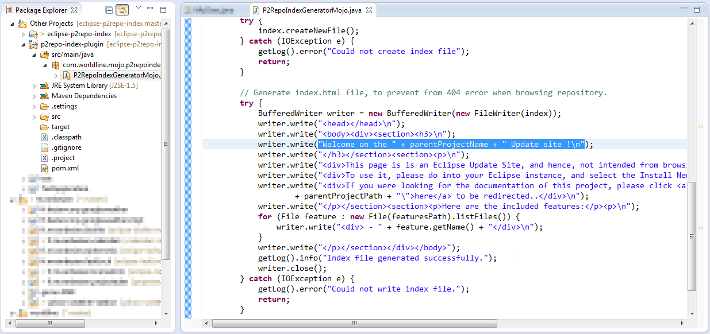
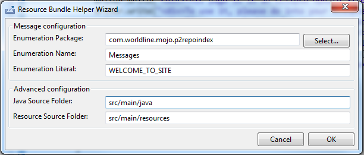
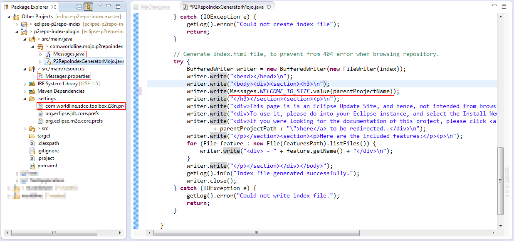
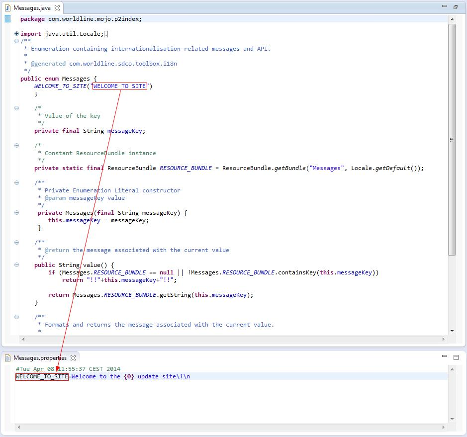
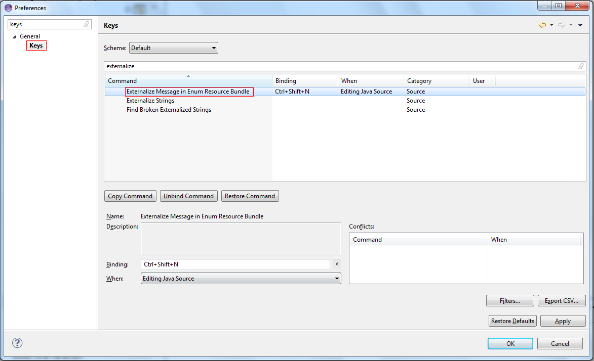

You are here on the tool update site.
It is not aimed for browsing, so please reference the corresponding URL into Eclipse to see the possible features to install...
This tool is an intuitive tool that helps with internationalizing applications.
To do so on in Java application, we have a design pattern which handles such concern in an efficient and robust way.
This design pattern relies on a Java enumeration, which contains:
one literal per message,
API to format the messages, through two methods:
value(), when there is no parameter to handle during formatting
value(Object...), when there is dynamic information to consider during formatting. It internally relies on the MessageFormat API.
If you expected to do this manually, that would require the following actions:
At first, you need to create the enumeration skeleton with its API and internal methods... This is always the same and most of time handled through copy/paste, so error-prone...
Then, for each message, you need to
Add a new Enumeration literal to the enumeration.
Need to create the new entry in the properties file that contains the internationalized messages. Can be cumbersome when lots of parameters need to be handled.
Update your source code to invoke the enumeration API. This can be cumbersome too, since you need to validate that the values passed as parameters correspond to the properties file's message parameters.
This tool proposes the automatic management of the actions to perform, listed here.
The objective of this tool allows to perform such transformation, from a message selected by the user, in the Java Editor. Hence the entry point is the Java Editor.
To trigger the tool execution, you need to use the Ctrl+Shift+N keyboard shortcut after having selected to string to internationalize, as in the screenshots below:

“You
select the string to internationalize & hit Ctrl+Shift+N...”

“...And
you use the wizard to customize the internationalization
transformation”
The wizard's fields are for the following purposes:
Enumeration Package: Package in Java Source Folder where the tool locates an existing or generates the Java Enumeration
Enumeration Name: Name of the Enumeration to locate, in package specified in field above
Enumeration Literal: Key of the message.
Java Source Folder: Source folder used for the generation of the Java source code. Here, when never customized before, the field is pre-filled as follows: if "src/main/java" is found, it is used. If not, look for "src". If found it is used, else uses the first found in project.
Resource Source Folder: Source folder used for the generation of the property files. Here, when never customized before, the field is pre-filled as follows: if "src/main/resources" is found, it is used. If not, look for "src". If found it is used, else uses the first found in project.
Here, all fields can be modified by user. Information overridden is persisted, or easier reuse, in the .settings file of the current project.
When done, the result is as follows:

“This
is the initial source code, after internationalization”
With generated files as follows

“The
internationalization intelligence is deported to an Enumeration and
the Resource Bundle properties file.”
If you don't feel familiar with the keyboard shortcut that was identified, you can change it from the eclipse preferences, as shown on the picture below:

Industrializes the application industrialization, using the Enumeration design pattern
An easy access through configurable keyboard shortcut: Ctrl+Shift+N
Everything's configurable: Enumeration package, enumeration name, enumeration literal, source and resource folders
Natively Supports String formatting!
Contacts:
As this is still a nightly build, there is no (not yet?) dedicated JIRA project... Hence, please provide your feedbacks, issues and remarks at
mvaawl@gmail.com